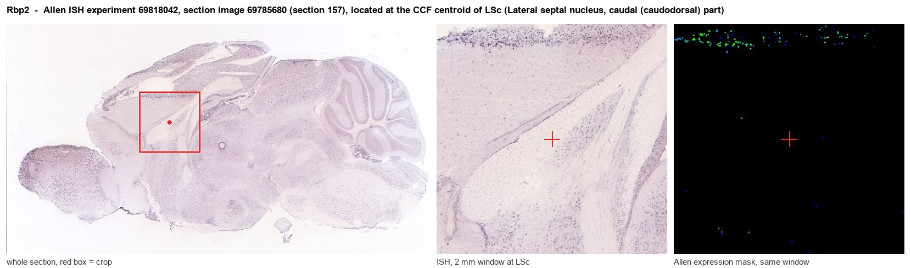
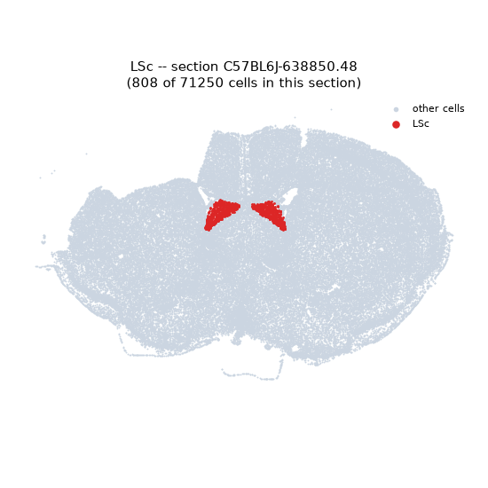
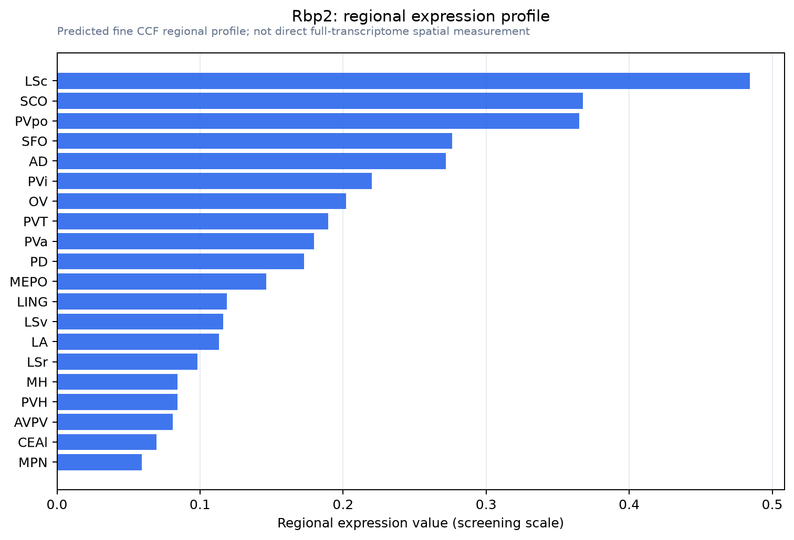

Rbp2
RIMS-binding protein 2 (RIM-BP2)
Spatial tier: RESTRICTED · Class: ION_CHANNEL · Top region: LSc (Lateral septal nucleus, caudal (caudodorsal) part) · Positive regions: 14/554
48.9Discovery Score
40.0Targetability Score
CEvidence grade C
What this means: Rbp2: fine CCF profile is restricted toward LSc (top regions: LSc, SCO, PVpo, SFO, AD; 14 positive regions); direct spatial validation is still required.
Function in LSc: evidence, prediction, innovation
- Gene function
- The protein annotated here is RIM-binding protein 2 (RIM-BP2), a large cytoplasmic active-zone scaffold built from SH3 and fibronectin-III domains. It bridges RIM and bassoon to the proline-rich C-terminus of CaV2.1 and CaV2.2 calcium channels, thereby clustering channels at release sites and setting the nanometre coupling distance between calcium entry and vesicle fusion, which in turn determines release probability and the speed of vesicle replenishment. Note that the symbol Rbp2 is also used for the unrelated intestinal retinol-binding protein 2, so the transcript identity should be confirmed.
- Region function
- The caudal (caudodorsal) lateral septal nucleus is a GABAergic hub receiving dense ventral-hippocampal CA1 input and projecting to hypothalamus and VTA; it suppresses feeding and controls anxiety, social behaviour and stress responses.
- Published in this region
- inferred No region-specific literature found. RIM-BP2 has been characterised at hippocampal mossy fibre terminals, where Grauel et al. 2016 and Miyano et al. 2024 showed that its loss reduces calcium-channel abundance and release probability, and at the calyx of Held and cochlear ribbon synapses (Acuna et al. 2015; Krinner et al. 2017); the ventral CA1 projection that provides the dominant excitatory drive to the caudal lateral septum has not been examined.
- Predicted function
- Prediction: because the caudodorsal lateral septum is driven by a small number of powerful hippocampal terminals whose reliability determines whether feeding and anxiety behaviours are suppressed, RIM-BP2 is predicted to be the molecule that keeps these synapses tightly coupled and high-fidelity during repetitive hippocampal theta and ripple activity. Deleting Rimbp2 from ventral CA1 neurons is predicted to loosen calcium-channel-to-sensor coupling, lower release probability at the CA1-to-LSc synapse and produce strong short-term depression during theta-frequency trains, weakening hippocampal suppression of feeding and producing hyperphagia in a palatable-food test alongside reduced anxiety-like avoidance; the phenotype should be rescued by raising extracellular calcium or by EGTA-insensitive coupling manipulations.
- Innovation
- ★★★★☆ 4/5 RIM-BP2 is well studied at a handful of model synapses but never in the septum, and the hippocampo-septal synapse is an unusually clean system for testing coupling-distance biology.
- Tools
- Rimbp2 knockout and Rimbp1/Rimbp2 double-knockout mice, Rimbp2 floxed alleles; no selective pharmacology, but EGTA-AM versus BAPTA-AM discriminates coupling distance; anti-RIM-BP2 antibodies and STED/dSTORM for active-zone nanoscale imaging; lateral septum access with Drd3-Cre, Crhr2-Cre or Esr1-Cre and retrograde AAV from ventral CA1.
- References
Direct evidence located at the region

Allen ISH experiment 69818042, section image 69785680 (section 157): the section that contains the CCF centroid of Lateral septal nucleus, caudal (caudodorsal) part according to the Allen image-to-atlas alignment (reference_to_image), with a 2 mm window around that point. Left: whole section, red box = window. Middle: ISH signal. Right: Allen's expression-mask view of the same window. open this image in the Allen viewer
Look it up yourself: Allen Mouse Brain ISH for Rbp2Allen reference atlas: LSc (structure 250)ABC Atlas MERFISH viewer(in the ABC Atlas choose dataset MERFISH-C57BL6J-638850-CCF, colour cells by gene "Rbp2" or by parcellation_substructure "LSc")All genes confined to LSc + 3-D brain
Direct spatial evidence
MERFISH REGION LOCATOR

Regional expression figure

Predicted WMB × fine-CCF profile; not direct full-transcriptome spatial measurement.
Spatial profile
Evidence and specificity
- Evidence status
- PREDICTED_FINE
- Direct sources
- None; predicted localization only
- Exclusive threshold
- 12 positive regions out of 554
- Spatial specificity
- 0.416
- Top-region fraction
- 0.104
- Filter status
- PASS
Interpretation limits
- Cell-type-to-region projection is imputed expression, not direct spatial measurement.
- Adult reference atlases do not establish stability across age, sex, strain, state, or disease.
- Transcript abundance does not guarantee protein abundance or genetic-tool performance.